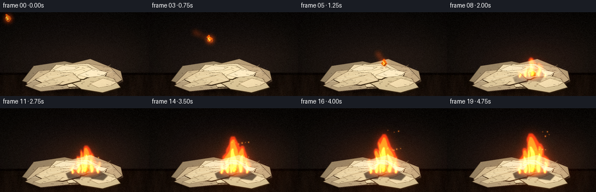
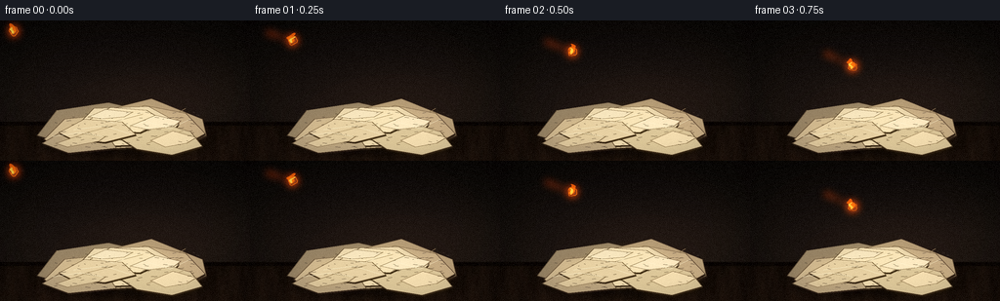
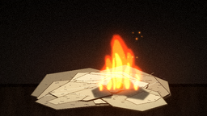
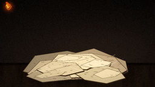
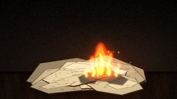
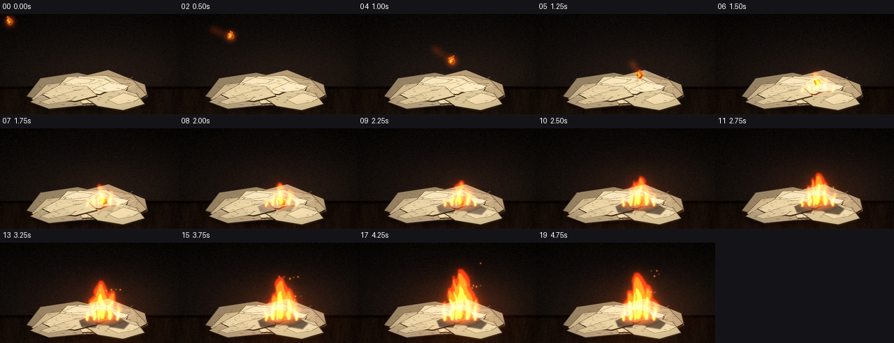
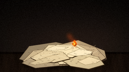
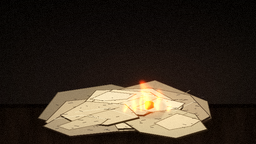

CODING AGENTS AS PIXEL WORLD MODELS
traex/DeepSeek-V4.1-Flash · phygen_141
点击播放 · 原生 RGB 像素
逐轮保存的候选
回放视频、检查图与代码变化。
每份候选均可单独播放。实际图片检查记录在下方工具轨迹中。
候选 01播放与检查图
点击播放 · 原生 RGB 像素


展开代码变化
--- 上一保存版本
+++ 本次保存版本
@@ -0,0 +1,625 @@
+from __future__ import annotations
+
+from pathlib import Path
+
+import numpy as np
+from PIL import Image, ImageDraw, ImageFilter
+
+import artifact_io
+
+
+WIDTH = 256
+HEIGHT = 144
+FPS = 4
+FRAME_COUNT = 20
+SS = 3
+SW = WIDTH * SS
+SH = HEIGHT * SS
+ROOT = Path(__file__).resolve().parent
+
+
+def sc(value: float) -> int:
+ return int(round(value * SS))
+
+
+def points(values: list[tuple[float, float]]) -> list[tuple[int, int]]:
+ return [(sc(x), sc(y)) for x, y in values]
+
+
+def pil_rgb(array: np.ndarray) -> Image.Image:
+ return Image.fromarray(np.clip(array * 255.0, 0, 255).astype(np.uint8), "RGB")
+
+
+def array_rgb(image: Image.Image) -> np.ndarray:
+ return np.asarray(image.convert("RGB"), dtype=np.float32) / 255.0
+
+
+def screen(base: np.ndarray, layer: np.ndarray, strength: float = 1.0) -> np.ndarray:
+ return 1.0 - (1.0 - base) * (1.0 - np.clip(layer * strength, 0.0, 1.0))
+
+
+def smoothstep(edge0: float, edge1: float, x: float) -> float:
+ if edge1 <= edge0:
+ return float(x >= edge1)
+ value = np.clip((x - edge0) / (edge1 - edge0), 0.0, 1.0)
+ return float(value * value * (3.0 - 2.0 * value))
+
+
+def make_background() -> np.ndarray:
+ yy, xx = np.mgrid[0:HEIGHT, 0:WIDTH].astype(np.float32)
+ wall_t = np.clip(yy / 112.0, 0.0, 1.0)
+ image = np.zeros((HEIGHT, WIDTH, 3), dtype=np.float32)
+ image[:] = np.array([0.030, 0.028, 0.031], dtype=np.float32)
+ image += wall_t[..., None] * np.array([0.045, 0.035, 0.029], dtype=np.float32)
+
+ # A low, soft pool of ambient light keeps the pile separated from the wall.
+ glow = np.exp(-(((xx - 150.0) / 110.0) ** 2 + ((yy - 83.0) / 48.0) ** 2))
+ image += glow[..., None] * np.array([0.055, 0.041, 0.030], dtype=np.float32)
+
+ # Wooden table, with a dark lip at the rear edge.
+ table = yy >= 104.0
+ depth = np.clip((yy - 104.0) / 40.0, 0.0, 1.0)
+ wood = np.zeros_like(image)
+ wood[:] = np.array([0.095, 0.064, 0.047], dtype=np.float32)
+ wood *= (0.68 + 0.45 * depth[..., None])
+ grain = (
+ 0.012 * np.sin(xx * 0.17 + yy * 0.045)
+ + 0.008 * np.sin(xx * 0.41 - yy * 0.08 + 0.9)
+ + 0.005 * np.sin(xx * 0.93 + yy * 0.17)
+ )
+ wood += grain[..., None] * np.array([1.0, 0.76, 0.54], dtype=np.float32)
+ image[table] = wood[table]
+ image[104:108] *= np.array([0.42, 0.39, 0.36], dtype=np.float32)
+
+ # Faint out-of-focus highlights on the back wall.
+ bokeh = Image.new("RGB", (WIDTH, HEIGHT), (0, 0, 0))
+ bd = ImageDraw.Draw(bokeh)
+ for x, y, r, c in [
+ (23, 35, 5, (47, 36, 23)),
+ (238, 49, 4, (43, 31, 20)),
+ (216, 21, 3, (36, 28, 19)),
+ (45, 17, 3, (30, 24, 18)),
+ ]:
+ bd.ellipse((sc(x - r), sc(y - r), sc(x + r), sc(y + r)), fill=tuple(sc(v / 255) for v in c))
+ bokeh = bokeh.filter(ImageFilter.GaussianBlur(sc(3.0)))
+ image = screen(image, array_rgb(bokeh), 0.65)
+
+ # Vignette and a restrained warm/cool split grade.
+ radius = np.sqrt(((xx - 128.0) / 153.0) ** 2 + ((yy - 73.0) / 103.0) ** 2)
+ vignette = np.clip(1.12 - 0.30 * radius**2, 0.58, 1.0)
+ image *= vignette[..., None]
+ image[..., 0] *= 1.035
+ image[..., 2] *= 0.96
+ return np.clip(image, 0.0, 1.0)
+
+
+def draw_sheet(
+ draw: ImageDraw.ImageDraw,
+ shape: list[tuple[float, float]],
+ fill: tuple[int, int, int],
+ crease: tuple[tuple[float, float], tuple[float, float]] | None = None,
+ edge: float = 0.8,
+) -> None:
+ p = points(shape)
+ shadow = [(x + sc(0.8), y + sc(1.3)) for x, y in p]
+ draw.polygon(shadow, fill=(52, 43, 32, 105))
+ draw.polygon(p, fill=fill)
+ draw.line(p + [p[0]], fill=(92, 77, 57), width=sc(edge))
+ if crease is not None:
+ a, b = crease
+ draw.line(
+ [(sc(a[0]), sc(a[1])), (sc(b[0]), sc(b[1]))],
+ fill=(132, 114, 84),
+ width=sc(0.65),
+ )
+
+
+def make_paper_pile() -> tuple[np.ndarray, Image.Image]:
+ layer = Image.new("RGBA", (SW, SH), (0, 0, 0, 0))
+ draw = ImageDraw.Draw(layer)
+
+ # Soft contact shadow beneath the loose heap.
+ shadow = Image.new("RGBA", (SW, SH), (0, 0, 0, 0))
+ sd = ImageDraw.Draw(shadow)
+ sd.ellipse((sc(42), sc(116), sc(214), sc(139)), fill=(0, 0, 0, 155))
+ shadow = shadow.filter(ImageFilter.GaussianBlur(sc(4.0)))
+ layer = Image.alpha_composite(layer, shadow)
+ draw = ImageDraw.Draw(layer)
+
+ # Back-to-front stack. Pale edges and folds make the heap read as loose sheets.
+ sheets = [
+ (
+ [(38, 118), (58, 92), (111, 84), (148, 93), (137, 120), (76, 129)],
+ (145, 130, 102),
+ ((68, 119), (124, 91)),
+ ),
+ (
+ [(111, 91), (155, 80), (207, 101), (211, 118), (181, 132), (144, 111)],
+ (174, 155, 120),
+ ((151, 113), (190, 90)),
+ ),
+ (
+ [(45, 122), (66, 101), (113, 96), (153, 106), (140, 130), (70, 134)],
+ (198, 181, 144),
+ ((74, 121), (126, 105)),
+ ),
+ (
+ [(109, 100), (148, 87), (190, 95), (210, 116), (181, 132), (144, 120)],
+ (190, 171, 134),
+ ((151, 115), (186, 99)),
+ ),
+ (
+ [(72, 115), (96, 90), (152, 88), (183, 105), (168, 127), (101, 129)],
+ (228, 213, 175),
+ ((102, 112), (157, 101)),
+ ),
+ (
+ [(43, 126), (68, 111), (106, 112), (119, 131), (70, 136)],
+ (178, 162, 129),
+ ((67, 123), (103, 118)),
+ ),
+ (
+ [(120, 119), (154, 102), (195, 114), (207, 129), (176, 138), (140, 132)],
+ (209, 194, 155),
+ ((150, 126), (187, 113)),
+ ),
+ (
+ [(84, 106), (113, 89), (150, 92), (168, 103), (143, 115), (103, 112)],
+ (241, 225, 184),
+ ((107, 106), (146, 96)),
+ ),
+ (
+ [(60, 115), (86, 101), (125, 104), (139, 117), (107, 125), (72, 121)],
+ (221, 204, 166),
+ ((84, 116), (119, 107)),
+ ),
+ ]
+ for shape, color, crease in sheets:
+ draw_sheet(draw, shape, color, crease)
+
+ # Loose torn strips on top of the pile.
+ strips = [
+ ([(90, 99), (108, 91), (136, 94), (127, 99), (104, 101)], (239, 226, 190)),
+ ([(133, 108), (159, 97), (185, 103), (177, 109), (151, 112)], (247, 231, 194)),
+ ([(57, 126), (86, 116), (108, 119), (101, 124), (69, 130)], (213, 197, 159)),
+ ([(154, 123), (177, 113), (201, 120), (191, 126), (169, 130)], (236, 218, 178)),
+ ]
+ for shape, color in strips:
+ p = points(shape)
+ draw.polygon(p, fill=color)
+ draw.line(p + [p[0]], fill=(105, 88, 65), width=sc(0.55))
+
+ # Fold highlights and a few fibers give the paper a dry, tactile surface.
+ for a, b, c in [
+ ((91, 96), (116, 105), (145, 94)),
+ ((75, 112), (107, 108), (135, 117)),
+ ((151, 104), (174, 111), (195, 101)),
+ ((54, 119), (82, 115), (106, 119)),
+ ]:
+ draw.line(
+ [(sc(a[0]), sc(a[1])), (sc(b[0]), sc(b[1])), (sc(c[0]), sc(c[1]))],
+ fill=(255, 244, 211),
+ width=sc(0.45),
+ )
+
+ rng = np.random.default_rng(17)
+ for _ in range(90):
+ x = rng.uniform(55, 202)
+ y = rng.uniform(94, 130)
+ length = rng.uniform(1.0, 5.0)
+ value = int(rng.uniform(105, 190))
+ draw.line(
+ [(sc(x), sc(y)), (sc(x + length), sc(y + rng.uniform(-0.7, 0.7)))],
+ fill=(value, value - 9, value - 23, 80),
+ width=sc(0.30),
+ )
+
+ alpha = np.asarray(layer.getchannel("A"), dtype=np.float32) / 255.0
+ return array_rgb(layer), layer
+
+
+def paper_texture(pile_rgb: np.ndarray, pile_layer: Image.Image) -> np.ndarray:
+ rng = np.random.default_rng(5)
+ yy, xx = np.mgrid[0:SH, 0:SW].astype(np.float32)
+ noise = rng.normal(0.0, 1.0, (SH, SW)).astype(np.float32)
+ noise = np.asarray(
+ Image.fromarray(np.uint8(np.clip(noise * 36 + 128, 0, 255))).filter(
+ ImageFilter.GaussianBlur(sc(0.55))
+ ),
+ dtype=np.float32,
+ )
+ texture = 1.0 + (noise - 128.0) / 128.0 * 0.075
+ texture += 0.018 * np.sin(yy * 1.8 + xx * 0.08)
+ texture += 0.012 * np.sin(xx * 2.4 - yy * 0.5)
+ mask = np.asarray(pile_layer.getchannel("A"), dtype=np.float32)[..., None] / 255.0
+ shaded = pile_rgb * texture[..., None]
+ return pile_rgb * (1.0 - mask) + shaded * mask
+
+
+def draw_smoke(frame: np.ndarray, t: float, intensity: float) -> np.ndarray:
+ if intensity <= 0.01:
+ return frame
+ smoke = Image.new("RGBA", (SW, SH), (0, 0, 0, 0))
+ draw = ImageDraw.Draw(smoke)
+ for k in range(16):
+ birth = 1.45 + k * 0.19
+ age = t - birth
+ if age <= 0.0 or age > 4.8:
+ continue
+ drift = 4.8 * age + 2.8 * np.sin(k * 1.73 + age * 1.35)
+ x = 145.0 + drift + (k % 3 - 1) * 5.0
+ y = 105.0 - 14.8 * age - (k % 5) * 3.0
+ radius_x = 6.5 + 3.9 * age + (k % 4) * 1.3
+ radius_y = 5.0 + 2.7 * age + (k % 3) * 1.1
+ opacity = int(np.clip(29.0 * (1.0 - age / 5.2) * (0.45 + 0.55 * intensity), 0, 28))
+ tint = 76 + (k % 4) * 4
+ draw.ellipse(
+ (
+ sc(x - radius_x),
+ sc(y - radius_y),
+ sc(x + radius_x),
+ sc(y + radius_y),
+ ),
+ fill=(tint, tint - 10, tint - 18, opacity),
+ )
+ draw.ellipse(
+ (
+ sc(x - radius_x * 0.55 + 2),
+ sc(y - radius_y * 0.45),
+ sc(x + radius_x * 0.48),
+ sc(y + radius_y * 0.42),
+ ),
+ fill=(tint + 14, tint + 1, tint - 10, opacity // 2),
+ )
+ smoke = smoke.filter(ImageFilter.GaussianBlur(sc(4.2)))
+ smoke_rgb = array_rgb(smoke)
+ smoke_alpha = np.asarray(smoke.getchannel("A"), dtype=np.float32)[..., None] / 255.0
+ return frame * (1.0 - smoke_alpha * 0.72) + smoke_rgb * smoke_alpha * 0.72
+
+
+def draw_scorch(frame: np.ndarray, intensity: float, t: float) -> np.ndarray:
+ if intensity <= 0.005:
+ return frame
+ layer = Image.new("RGBA", (SW, SH), (0, 0, 0, 0))
+ draw = ImageDraw.Draw(layer)
+ alpha = int(np.clip(175 * intensity, 0, 175))
+ char_shapes = [
+ [(131, 107), (139, 96), (158, 97), (168, 108), (160, 119), (139, 118)],
+ [(113, 112), (128, 105), (141, 110), (137, 122), (117, 121)],
+ [(153, 113), (171, 107), (185, 116), (177, 124), (157, 121)],
+ ]
+ for i, shape in enumerate(char_shapes):
+ if i == 0 or intensity > 0.35 + 0.12 * i:
+ draw.polygon(points(shape), fill=(31, 24, 20, alpha))
+ layer = layer.filter(ImageFilter.GaussianBlur(sc(0.8)))
+ image = pil_rgb(frame)
+ image = Image.alpha_composite(image.convert("RGBA"), layer).convert("RGB")
+ frame = array_rgb(image)
+
+ # A few glowing cracks around the hottest part of the paper.
+ glow = Image.new("RGB", (SW, SH), (0, 0, 0))
+ gd = ImageDraw.Draw(glow)
+ flicker = 0.82 + 0.18 * np.sin(t * 8.0)
+ for a, b, c in [
+ ((137, 111), (143, 106), (149, 110)),
+ ((151, 112), (156, 108), (162, 113)),
+ ((128, 114), (133, 111), (137, 116)),
+ ]:
+ gd.line(
+ [(sc(a[0]), sc(a[1])), (sc(b[0]), sc(b[1])), (sc(c[0]), sc(c[1]))],
+ fill=(255, int(90 + 55 * flicker), 15),
+ width=sc(0.65),
+ )
+ glow = glow.filter(ImageFilter.GaussianBlur(sc(1.1)))
+ return screen(frame, array_rgb(glow), 0.30 * intensity)
+
+
+def tongue_polygon(
+ base_x: float,
+ base_y: float,
+ height: float,
+ width: float,
+ phase: float,
+ t: float,
+ width_scale: float = 1.0,
+ height_scale: float = 1.0,
+) -> list[tuple[int, int]]:
+ count = 25
+ left: list[tuple[int, int]] = []
+ right: list[tuple[int, int]] = []
+ h = max(0.1, height * height_scale)
+ for j in range(count):
+ v = j / (count - 1)
+ y = base_y - h * v
+ sway = (
+ 2.8 * np.sin(v * 4.4 + phase + t * 3.9) * (v**1.2)
+ + 1.4 * np.sin(v * 9.0 - t * 2.6 + phase * 0.3) * (v**1.5)
+ )
+ x = base_x + sway
+ profile = (np.sin(np.pi * min(1.0, v * 0.92 + 0.04)) ** 0.66) * (1.0 - 0.22 * v)
+ half = max(0.22, width * width_scale * profile)
+ jitter = 0.85 + 0.30 * np.sin(phase * 3.1 + v * 13.0 + t * 7.0)
+ left.append((sc(x - half * jitter), sc(y)))
+ right.append((sc(x + half * (1.55 - 0.35 * jitter)), sc(y)))
+ return left + right[::-1]
+
+
+def draw_flames(frame: np.ndarray, t: float, intensity: float) -> tuple[np.ndarray, np.ndarray]:
+ if intensity <= 0.004:
+ return frame, np.zeros_like(frame)
+ main_h = 25.0 + 47.0 * intensity
+ main_w = 7.5 + 7.0 * intensity
+ tongues = [
+ (145.5, 109.0, main_h, main_w, 0.3, 1.00, 1.00),
+ (134.5, 111.0, 0.70 * main_h, 0.72 * main_w, 1.8, 0.90, 0.92),
+ (157.0, 110.0, 0.78 * main_h, 0.80 * main_w, 3.2, 0.92, 0.96),
+ (124.5, 112.0, 0.47 * main_h, 0.46 * main_w, 4.4, 0.88, 0.83),
+ (168.0, 111.5, 0.53 * main_h, 0.48 * main_w, 5.2, 0.90, 0.86),
+ (141.0, 111.0, 0.85 * main_h, 0.40 * main_w, 2.4, 0.75, 1.05),
+ ]
+ outer = Image.new("L", (SW, SH), 0)
+ middle = Image.new("L", (SW, SH), 0)
+ core = Image.new("L", (SW, SH), 0)
+ od = ImageDraw.Draw(outer)
+ md = ImageDraw.Draw(middle)
+ cd = ImageDraw.Draw(core)
+ for bx, by, h, w, phase, ws, hs in tongues:
+ od.polygon(tongue_polygon(bx, by, h, w, phase, t, ws, hs), fill=255)
+ md.polygon(tongue_polygon(bx, by, h * 0.91, w, phase + 0.2, t, ws * 0.64, hs), fill=255)
+ cd.polygon(tongue_polygon(bx, by, h * 0.65, w, phase - 0.15, t, ws * 0.31, hs), fill=255)
+
+ outer = outer.filter(ImageFilter.GaussianBlur(sc(1.05)))
+ middle = middle.filter(ImageFilter.GaussianBlur(sc(0.72)))
+ core = core.filter(ImageFilter.GaussianBlur(sc(0.55)))
+ oa = np.asarray(outer, dtype=np.float32) / 255.0
+ ma = np.asarray(middle, dtype=np.float32) / 255.0
+ ca = np.asarray(core, dtype=np.float32) / 255.0
+
+ # Flame light is accumulated as a colored emission layer, then bloomed.
+ emission = np.zeros_like(frame)
+ emission += oa[..., None] * np.array([1.0, 0.19, 0.025], dtype=np.float32) * 0.74
+ emission += ma[..., None] * np.array([1.0, 0.47, 0.055], dtype=np.float32) * 0.78
+ emission += ca[..., None] * np.array([1.0, 0.82, 0.27], dtype=np.float32) * 0.82
+
+ base_glow = Image.fromarray(np.uint8(np.clip(oa * 255, 0, 255)), "L").filter(
+ ImageFilter.GaussianBlur(sc(8.0))
+ )
+ ga = np.asarray(base_glow, dtype=np.float32) / 255.0
+ emission += ga[..., None] * np.array([1.0, 0.20, 0.035], dtype=np.float32) * (0.34 + 0.25 * intensity)
+
+ # Hot base and tiny blue roots anchor the fire to the paper.
+ base = Image.new("L", (SW, SH), 0)
+ bd = ImageDraw.Draw(base)
+ bd.ellipse(
+ (sc(122), sc(103), sc(170), sc(116)),
+ fill=int(160 + 80 * intensity),
+ )
+ base = base.filter(ImageFilter.GaussianBlur(sc(2.2)))
+ ba = np.asarray(base, dtype=np.float32)[..., None] / 255.0
+ emission += ba * np.array([0.50, 0.16, 0.025], dtype=np.float32)
+
+ flame_layer = np.clip(emission, 0.0, 1.4)
+ return screen(frame, flame_layer, 1.0), flame_layer
+
+
+def draw_ember_particles(frame: np.ndarray, t: float, intensity: float) -> np.ndarray:
+ if intensity <= 0.03:
+ return frame
+ particles = Image.new("RGB", (SW, SH), (0, 0, 0))
+ draw = ImageDraw.Draw(particles)
+ for k in range(24):
+ birth = 1.6 + k * 0.115
+ age = t - birth
+ if age <= 0.0:
+ continue
+ life = 1.7 + (k % 5) * 0.18
+ if age > life:
+ continue
+ x = 135.0 + (k * 7.3) % 34 + 5.2 * age + 2.4 * np.sin(k + age * 4.0)
+ y = 107.0 - (19.0 + (k % 7) * 3.0) * age - 2.0 * age * age
+ fade = np.clip(1.0 - age / life, 0.0, 1.0)
+ radius = 0.45 + (k % 3) * 0.22
+ color = (255, int(95 + 75 * fade), int(18 + 35 * fade))
+ draw.ellipse((sc(x - radius), sc(y - radius), sc(x + radius), sc(y + radius)), fill=color)
+ glow = particles.filter(ImageFilter.GaussianBlur(sc(1.1)))
+ particles = screen(array_rgb(particles), array_rgb(glow), 1.4)
+ return screen(frame, particles, 0.78)
+
+
+def ball_position(frame_index: int) -> tuple[float, float, bool]:
+ flight = [
+ (14.0, 11.0),
+ (43.5, 20.5),
+ (74.0, 32.0),
+ (105.0, 47.0),
+ (135.0, 67.5),
+ (148.0, 88.0),
+ ]
+ if frame_index < len(flight):
+ return flight[frame_index][0], flight[frame_index][1], True
+ settle = [(146.0, 98.0), (149.0, 105.0)]
+ if frame_index - len(flight) < len(settle):
+ x, y = settle[frame_index - len(flight)]
+ return x, y, False
+ return 148.0, 106.0, False
+
+
+def draw_ball(frame: np.ndarray, frame_index: int, t: float) -> np.ndarray:
+ x, y, in_flight = ball_position(frame_index)
+ ball = Image.new("RGBA", (SW, SH), (0, 0, 0, 0))
+ glow = Image.new("RGB", (SW, SH), (0, 0, 0))
+ draw = ImageDraw.Draw(ball)
+ gd = ImageDraw.Draw(glow)
+ angle = t * 4.8 + 0.8
+
+ # Motion trail and hot halo.
+ if in_flight and frame_index > 0:
+ px, py, _ = ball_position(frame_index - 1)
+ for step in range(5, 0, -1):
+ q = step / 6.0
+ tx = x * (1.0 - q) + px * q
+ ty = y * (1.0 - q) + py * q
+ r = 0.9 + 1.4 * q
+ gd.ellipse((sc(tx - r), sc(ty - r), sc(tx + r), sc(ty + r)), fill=(255, 70, 8))
+ halo_r = 5.5 if in_flight else 8.0
+ gd.ellipse((sc(x - halo_r), sc(y - halo_r), sc(x + halo_r), sc(y + halo_r)), fill=(255, 75, 7))
+
+ # Charred, irregular paper pellet.
+ radius = 4.6
+ vertices = []
+ for j in range(14):
+ a = 2.0 * np.pi * j / 14.0
+ wobble = 1.0 + 0.15 * np.sin(j * 4.7 + angle)
+ vertices.append((sc(x + radius * wobble * np.cos(a)), sc(y + radius * wobble * np.sin(a))))
+ draw.polygon(vertices, fill=(41, 27, 19, 255), outline=(255, 92, 10, 255), width=sc(0.65))
+ draw.ellipse(
+ (sc(x - 2.2), sc(y - 2.5), sc(x + 2.2), sc(y + 1.6)),
+ fill=(91, 39, 18, 255),
+ )
+ for offset in (-1.7, 0.0, 1.8):
+ dx = offset * np.cos(angle)
+ dy = offset * np.sin(angle)
+ draw.line(
+ [(sc(x + dx - 1.2), sc(y + dy + 1.3)), (sc(x + dx), sc(y + dy - 1.6))],
+ fill=(255, 157, 30, 255),
+ width=sc(0.55),
+ )
+
+ if in_flight:
+ # A short flame streams behind the moving pellet.
+ tail = Image.new("RGBA", (SW, SH), (0, 0, 0, 0))
+ td = ImageDraw.Draw(tail)
+ tail_pts = tongue_polygon(
+ x - 1.5,
+ y + 2.5,
+ 10.5,
+ 3.3,
+ angle,
+ t,
+ 1.0,
+ 1.0,
+ )
+ td.polygon(tail_pts, fill=(255, 91, 8, 210))
+ tail_pts2 = tongue_polygon(
+ x - 1.5,
+ y + 2.3,
+ 6.5,
+ 1.5,
+ angle + 0.7,
+ t,
+ 0.85,
+ 1.0,
+ )
+ td.polygon(tail_pts2, fill=(255, 208, 66, 235))
+ ball = Image.alpha_composite(ball, tail)
+ draw = ImageDraw.Draw(ball)
+
+ glow = glow.filter(ImageFilter.GaussianBlur(sc(3.8)))
+ image = pil_rgb(frame)
+ image = Image.alpha_composite(image.convert("RGBA"), ball).convert("RGB")
+ frame = array_rgb(image)
+ return screen(frame, array_rgb(glow), 0.85)
+
+
+def impact_dust(frame: np.ndarray, frame_index: int) -> np.ndarray:
+ if frame_index not in (5, 6, 7):
+ return frame
+ age = frame_index - 5
+ dust = Image.new("RGBA", (SW, SH), (0, 0, 0, 0))
+ draw = ImageDraw.Draw(dust)
+ rng = np.random.default_rng(44)
+ for k in range(22):
+ side = -1 if k % 2 == 0 else 1
+ x = 148.0 + side * (3.0 + age * (2.0 + rng.uniform(0, 3.2)))
+ y = 93.0 - age * (2.2 + rng.uniform(0, 2.3)) + rng.uniform(-3.0, 3.0)
+ r = 0.55 + rng.uniform(0.0, 0.9)
+ alpha = int(105 * (1.0 - age / 4.0))
+ draw.ellipse((sc(x - r), sc(y - r), sc(x + r), sc(y + r)), fill=(178, 157, 121, alpha))
+ dust = dust.filter(ImageFilter.GaussianBlur(sc(0.55)))
+ image = Image.alpha_composite(pil_rgb(frame).convert("RGBA"), dust).convert("RGB")
+ return array_rgb(image)
+
+
+def add_fire_light(frame: np.ndarray, t: float, intensity: float) -> np.ndarray:
+ if intensity <= 0.002:
+ return frame
+ yy, xx = np.mgrid[0:SH, 0:SW].astype(np.float32)
+ x = xx / SS
+ y = yy / SS
+ flicker = 0.88 + 0.08 * np.sin(t * 10.5) + 0.04 * np.sin(t * 18.3 + 1.2)
+ field = np.exp(-(((x - 146.0) / 63.0) ** 2 + ((y - 99.0) / 43.0) ** 2))
+ field += 0.34 * np.exp(-(((x - 146.0) / 25.0) ** 2 + ((y - 107.0) / 16.0) ** 2))
+ light = np.clip(field * intensity * flicker, 0.0, 1.0)
+ warm = np.array([0.38, 0.115, 0.018], dtype=np.float32)
+ return screen(frame, light[..., None] * warm, 0.72)
+
+
+def final_grade(frame: np.ndarray, frame_index: int) -> np.ndarray:
+ # Gentle bloom around hot pixels.
+ hot = np.clip((frame - 0.66) / 0.34, 0.0, 1.0)
+ bloom_image = Image.fromarray(np.uint8(hot * 255), "RGB").filter(
+ ImageFilter.GaussianBlur(sc(3.4))
+ )
+ bloom = array_rgb(bloom_image)
+ frame = screen(frame, bloom, 0.27)
+
+ # Subtle warm highlights, cool shadows, and final vignette.
+ luminance = frame.mean(axis=2, keepdims=True)
+ frame += (1.0 - luminance) * np.array([0.010, 0.004, -0.003], dtype=np.float32)
+ frame[..., 0] = np.clip(frame[..., 0] * 1.025, 0.0, 1.0)
+ frame[..., 2] = np.clip(frame[..., 2] * 0.985, 0.0, 1.0)
+ yy, xx = np.mgrid[0:SH, 0:SW].astype(np.float32)
+ radius = np.sqrt(((xx - SW / 2) / (SW * 0.59)) ** 2 + ((yy - SH / 2) / (SH * 0.62)) ** 2)
+ frame *= np.clip(1.06 - 0.18 * radius**2, 0.73, 1.0)[..., None]
+ return np.clip(frame, 0.0, 1.0)
+
+
+def render_frames() -> np.ndarray:
+ background = make_background()
+ background_large = pil_rgb(background).resize((SW, SH), Image.Resampling.BICUBIC)
+ background_large = background_large.filter(ImageFilter.GaussianBlur(sc(0.30)))
+ background = array_rgb(background_large)
+
+ pile_rgb, pile_layer = make_paper_pile()
+ pile_rgb = paper_texture(pile_rgb, pile_layer)
+ pile_alpha = np.asarray(pile_layer.getchannel("A"), dtype=np.float32)[..., None] / 255.0
+ scene = background * (1.0 - pile_alpha) + pile_rgb * pile_alpha
+
+ frames = []
+ for frame_index in range(FRAME_COUNT):
+ t = frame_index / FPS
+ fire_intensity = smoothstep(1.22, 4.55, t)
+ fire_intensity *= 0.92 + 0.08 * np.sin(t * 7.7 + 0.4)
+ fire_intensity = float(np.clip(fire_intensity, 0.0, 1.0))
+
+ frame = scene.copy()
+ frame = add_fire_light(frame, t, fire_intensity)
+ frame = draw_scorch(frame, smoothstep(1.35, 2.65, t), t)
+ frame = impact_dust(frame, frame_index)
+ frame = draw_smoke(frame, t, smoothstep(1.45, 2.55, t))
+ frame = draw_ball(frame, frame_index, t)
+ frame, _ = draw_flames(frame, t, fire_intensity)
+ frame = draw_ember_particles(frame, t, fire_intensity)
+ frame = final_grade(frame, frame_index)
+
+ image = pil_rgb(frame).resize((WIDTH, HEIGHT), Image.Resampling.LANCZOS)
+ image = np.asarray(image, dtype=np.float32) / 255.0
+
+ # Fine, per-frame sensor grain; strongest in the shadows.
+ rng = np.random.default_rng(1000 + frame_index)
+ grain = rng.normal(0.0, 0.0105, (HEIGHT, WIDTH, 1)).astype(np.float32)
+ shadow_weight = 1.0 - 0.55 * np.clip(image.mean(axis=2, keepdims=True), 0.0, 1.0)
+ image = np.clip(image + grain * shadow_weight, 0.0, 1.0)
+ frames.append(np.uint8(np.round(image * 255.0)))
+
+ return np.stack(frames, axis=0)
+
+
+def main() -> None:
+ frames = render_frames()
+ artifact_io.save(frames, ROOT)
+ print(f"saved {len(frames)} frames to {ROOT}")
+
+
+if __name__ == "__main__":
+ main()
可观测工具轨迹
实际执行的命令与返回图片。
命令 1exit 0
/bin/bash -c "pwd && rg --files -g 'prompt.txt' -g 'GENERATION_RULES.md' -g 'task_spec.json' -g '"'!*.mp4'"' -g '"'!*.mov'"'"
命令 2exit 0
/bin/bash -c 'ls -la'
命令 3exit 0
/bin/bash -c 'cat prompt.txt'
命令 4exit 0
/bin/bash -c 'cat GENERATION_RULES.md'
命令 5exit 0
/bin/bash -c 'cat task_spec.json'
命令 6exit 0
/bin/bash -c "sed -n '1,240p' artifact_io.py"
命令 7exit 0
/bin/bash -c "python - <<'PY' import importlib.util for m in ['numpy','PIL','scipy','cv2','imageio','matplotlib']: print(m, bool(importlib.util.find_spec(m))) PY"
命令 8exit 0
/bin/bash -c 'fc-list | head -20'
命令 9exit 0
/bin/bash -c 'python generate.py'
命令 10exit 127
/bin/bash -c 'identify frames/00.png frames/19.png inspection.png 2>/dev/null || file frames/00.png frames/19.png inspection.png'
命令 11exit 0
/bin/bash -c 'ls -lh pixels.npz frames/00.png frames/19.png index.html inspection.png transition_check.png'
命令 12exit 0
/bin/bash -c "python - <<'PY'
from PIL import Image, ImageDraw
from pathlib import Path
idx=[0,2,4,5,6,7,8,9,10,11,13,15,17,19]
w,h=256,144
sheet=Image.new('RGB',(w*5,(h+20)*3),(20,20,24))
d=ImageDraw.Draw(sheet)
for j,i in enumerate(idx):
x=(j%5)*w; y=(j//5)*(h+20)
d.text((x+4,y+3),f'{i:02d} {i/4:.2f}s',fill='white')
sheet.paste(Image.open(f'frames/{i:02d}.png'),(x,y+20))
sheet.save('.tmp/sequence.png')
PY"命令 13exit 0
/bin/bash -c "python - <<'PY'
from PIL import Image
import numpy as np
im=np.asarray(Image.open('frames/00.png'))
for p in [(100,100),(120,105),(150,105),(180,110),(80,120),(150,125),(145,90),(50,50)]:
x,y=p; print(p,im[y,x])
PY"命令 14exit 0
/bin/bash -c "python - <<'PY'
from pathlib import Path
import json, numpy as np
from PIL import Image
root=Path('.')
spec=json.loads((root/'task_spec.json').read_text())
files=sorted((root/'frames').glob('*.png'))
assert len(files)==spec['frames']==20, len(files)
arr=np.stack([np.asarray(Image.open(p).convert('RGB')) for p in files])
assert arr.shape==(20,144,256,3), arr.shape
z=np.load(root/'pixels.npz')['pixels']
assert z.shape==(144,256,20), z.shape
assert (root/'index.html').stat().st_size>100000
means=arr.mean(axis=(1,2,3))
print('frames:', len(files))
print('shape:', arr.shape)
print('dtype:', arr.dtype)
print('pixel tensor:', z.shape, z.dtype)
print('index.html:', (root/'index.html').stat().st_size, 'bytes')
print('brightness first/mid/last:', *[f'{means[i]:.2f}' for i in (0,10,19)])
print('temporal mean abs diff:', f'{np.abs(np.diff(arr.astype(np.int16),axis=0)).mean():.3f}')
PY"命令 15exit 0
/bin/bash -c "python -m py_compile generate.py && python - <<'PY' from pathlib import Path for p in ['generate.py','prompt.txt','task_spec.json','pixels.npz','index.html','inspection.png','transition_check.png']: q=Path(p); print(p, q.stat().st_size) PY"
视觉工具实际返回图片 1

视觉工具实际返回图片 2

视觉工具实际返回图片 3

视觉工具实际返回图片 4

视觉工具实际返回图片 5

视觉工具实际返回图片 6

视觉工具实际返回图片 7

视觉工具实际返回图片 8

保存候选 1 份；完成命令 15 次；可验证图片返回 8 张。原始 API 响应与完整日志保留在本地。